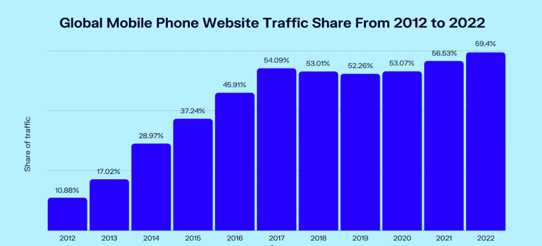

Research Report on Mobile Computing
INTRODUCTION
In this report, I will discuss the future of mobile computing as one of the forms of
technological advancement. Next, I will review mobile phones in detail taking an example
of my own which is of the Samsung brand. Finally, I will explain the mobile plan I subscribe
to as well as service provider. I will be researching using several resources from the
internet especially on the future of mobile computing and will report my findings within
different sections of this report including illustrations.
FUTURE OF MOBILE COMPUTING
Mobile Computing is an efficient way in which people can access networks.
The growth of mobile computing has been steady over the years as the world
continues to embrace ever-changing technologies for example the move from wired
connections to wireless connections. Physical wires are no longer needed to connect two
devices together. This has made it possible for networking to take place more conveniently
even in spite of geographical distance between two devices. This type of communication is
commonly referred to as mobile communication. Signals are sent through the air by the sending
device and received by the target device.
There are two components of mobile computing that is hardware and software. Hardware refers to
physical devices that are used such as mobile phones, laptops and tablets among others while
software refers to the programs that run in order for these devices to perform their various
intended functions.
Digital media usage, which is a key component of mobile computing as a whole, is rapidly rising.
At the moment, the world’s average daily usage is six hours per day. The major devices responsible
for this average is smartphones. Being portable and yet being able to carryout almost all tasks
that a desktop or laptop do explains why it is so popular. At this rate, one would predict that
it will only keep increasing in the coming years.
Another development that will likely grow and increase in popularity is virtual reality. This
is a source of entertainment to people as it produces a real life setting through a pair of glasses. Mobile Development Companies are looking to include this in their new device models for example Samsung with the VR play station gear.
The graph below shows global mobile traffic between 2012 and 2022.

Source: Gs.statcounter.com
The illustration shows that mobile computing only continues to grow as more developments are
made to the existing technology.
MOBILE MANUFACTURERS
Mobile manufacturers are different companies that produce and sell devices that aid
networking. Examples are Apple, Samsung, LG and Motorola. My mobile phone manufacturer
is Samsung model A31.
It cost $319 and was first released on 27th April,2020. The operating system used is Android 10.
This phone type is powered by an Octa-core processor, Mediatek MT6768 Helio P65 chipset. In terms of storage, the device is equipped with 4GB of RAM, its internal storage is 128GB and externally supports a maximum of 512GB. The physical screen size of this device is 6.4” with an infinity-U display. The Samsung A31 is also endowed with a quad rear camera. This camera is split into 4 different views or angles; the main camera which is also the autofocus camera,Ultra-wide camera, depth camera and macro camera. The front camera is a single view camera with 20MP. It also comes with an in-built GPS system that can detect its live location.
In terms of battery life, this device has 5000mAh and comes with up to 33 hours of talktime.
Connectivity wise, it is able to connect to other devices through its in-built Bluetooth setting and to the internet using Wi-Fi or mobile data. By default, the Samsung A31 uses chrome as its browser but users can use other browsers such as firefox, opera mini among others.
There is also a voice assistant feature which increases accessibility that is Google Assistant. One could also enable text to speech engine which is another great accessibility feature.
Finally, this device is dual sim which means that it can properly function while using up to two different sim cards from different network providers. Security wise, it offers smart lock options such as fingerprint sensors.
MOBILE PLANS
Within Canada, there are several service providers who offer connectivity and networking
services. Examples are Bell, Fido, Rogers and Wind.
The service provider that I use is public mobile and particularly, I subscribe to a data plan that
costs $15 per month. With this plan, I receive unlimited incoming calls, 100 minutes to make calls
within Canada, 250MB data at 3G speed and unlimited international and local texting.
Public mobile enables one to set up voice mail and be able to listen to messages left by their
callers at a later time if they were not in position to attend to their call at the time.
In terms of calls, this service provider offers a range of features such as call display which
enables one to see the phone numbers of their callers at the time of the call, call log which
stores phone numbers and duration of past calls as well as whether they were received, dialed or
missed.In addition to this, call blocking is also offered which enables one to hide their number
from certain callers as well as an option to block certain numbers or direct them straight to
voicemail.
The cell phone plan is to be paid monthly either manually or automatically by pre-registering a
credit card. If one signs up for automatic pay or ‘autopay’, they receive $2 for each month that
they successfully renew their plan using this option.
What makes public mobile unique is that it does not offer any phone support and all account issues
are solved online by other users.
In terms of coverage, this network is world-wide as it is part of a larger network group that is
Telus therefore users are able to reach each other as well as others of different service providers
around the world.
Public mobile offers connectivity to the internet through mobile data and these plans can be changed
at any time. However, they take effect after the previous subscription of thirty days has ended.
Public mobile customer service can be accessed through a voice assistant by dialing *611 therefore
it is possible for one to add data to their plan without first having to connect to the internet.